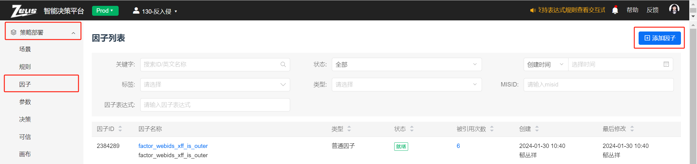

说明：创建/修改因子
一、背景
因子/factor：组成规则的逻辑单元。一个因子可以被不同的规则使用，包含表达式型和扩展型、累计型；引擎中最小的逻辑单元，常常将复杂逻辑进行封装类似“特征”的概念，可在多个规则中复用，例如：“系统文件空间”、“baseband_version码”是判断模拟器的特征；因子目前只支持逻辑表达式，输出结果可以是规则平台允许的任意类型。因子的表达式由其他因子和参数组装而成。因子是被抽取出来的概念，目的是为了更大程度的复用表达式逻辑，同时减少规则表达式的复杂度；
因子类型主要有以下几种：
- 普通因子：变量是参数。（复合因子的变量，复合因子本质上为规则。）
- 累计因子：在业务中会高频使用到与累计相关的逻辑。例如：在登陆、下单、支付等事件需要对同ip的userid进行计数计算，计算结果作为特征引用在规则中。常见的实现方式可通过硬编码方式，但存在逻辑频繁变化，不好维护且更新效率低的问题，或者通过异步hive数据加工特征但时效性较低（T+1）。要满足高时效、高灵活、好维护的要求，宙斯引入Scorpio技术组件实现累计通用逻辑的封装，比如，支持累计周期、计数/求和/最近几次）、累计值等特征计算流程配置化。但在实践中发现，还存在长周期数据精度低、历史数据无法保存等问题；
- 扩展因子：扩展因子可以认为是原有功能的扩展，目前主要用于接入各种外部依赖的因子，外部依赖的特点是，有明确的接口或函数，通过配置输入的参数，在执行规则的时候返回调用结果作为因子的值。目前主要有名单库因子（与名单库联动过程中将查询名单的逻辑进行封装）、Medis因子。
- 决策表因子：在部分业务中需要引擎处理的判断条件较多，各条件又相互组合、有多种决策方案的情况，需要精确、简洁的方式来描述这类复杂逻辑。在低频使用时，可以通过硬编码的case-when、if-else语句实现，但在实时性和配置化上不尽人意，最终通过决策表将多个独立的条件和多个动作直接的联系清晰的表示出来并实现逻辑的封装
- 因子工具：由规则组生成因子工具可快速便捷提供集团内其他业务使用，相较于提供规则组直接服务可节省人力和提升安全性(北上联合构建虚假设备识别工具、上海内容安全识别工具)
下文中涉及到的其他名词解释：
属性信息：标签、共享业务方
逻辑信息：表达式、状态、英文名称
强制更新：若本次操作影响线上表达式的执行结果，需先将线上状态取消后再进行操作或者强行变更信息；
智能测试：因子修改时按系统安全执行的双跑测试流程管理，即：当修改因子、因子工具时，若影响线上策略的执行，将会进入智能测试流程，进行修改生效前的双跑。双跑期间，线上仍按照修改前的因子逻辑执行；修改的逻辑为标记状态执行。
公示：因子修改生效前的系统信息公示，为修改生效前的信息同步机制，默认30分钟，系统自动执行；
二、操作说明
step1：入口
策略部署—>因子—>添加因子

step2：添加因子
1、首先填写因子的逻辑信息，包括因子的中文名称、英文名称，在选择工具里选择要创建的因子类型，选择结果类型，填写因子内容（表达式，因子的逻辑，表达式中的变量可以是参数或者其他因子），点击下一步
注意：
- 英文名称：驼峰命名，因子命名规范：factor_xxx_yyy_zzz，如factor_mac_is_not_has_owne表示因子是检验mac是否有对应厂商。累计因子命名规范：acc_xxx_yyy_zzz，如acc_30d_simmobile_iccid表示30天内同simmobile的iccid累计。
- 选择工具：普通因子/累计因子/决策表因子/名单库因子，同原在因子列表页面中配置扩展因子相同
- 因子内容：原表达式书写
-
点击保持草稿：草稿信息不保持在列表中，当再次点击"添加因子"时，提示有草稿信息,可使用或者废弃
2、接着，给因子添加测试用例（测试因子逻辑，直到显示测试成功，否则再回去修改因子表达式），测试成功后，单击下一步
3、最后，填写因子的属性信息，选择共享业务方和添加标签，点击完成，在因子列表中看到刚刚创建的因子，表明因子创建成功。
step4：因子修改
1、修改逻辑信息
注意：
此时若有其他人正在编辑该因子，您将收到提示xxmis号正在修改，需xx修改完成/退出编辑状态后，您方可修改。若您急于修改请大象联系该用户退出编辑状态。

（1）同添加因子入口一样，进入因子页面，在因子列表中找到创建的因子，点击因子备注，进入因子详情页面，点击编辑，即可按照刚刚添加因子的流程对因子的逻辑信息、测试、属性信息进行修改。
（2）进入编辑页面后，修改因子仍需要经过测试，并且至少有一条新增的成功的测试用例方可提交修改，之后启动智能测试任务。
（3）智能测试流程：设定标记时间（人工设定）-->双跑标记（系统执行）-->双跑完成（系统执行）-->验证数据是否正常（系统提供数据人工验证）-->数据正常，公示上线（人工确认）-->公示30分钟，自动上线生效（系统执行）-->智能测试完成
注意
- 修改因子，在智能测试中会依据引用因子的规则在其场景配置同期命中量作为对比数据；
- 为什么要有公示----因子存在多业务方共用的情况，当一个业务方修改时会影响其他业务方，因子公示会将因子确认修改的信息和双跑结果以大象消息通知给其他业务方，若通知后30分钟内其他业务方无异议则成功；若有异议则需业务方大象同修改人沟通，终止修改；
- 双跑标记最长时间为30分钟，想要延长双跑标记时间可以么？本期不支持，若有需求后续二期增加。
- 修改需要紧急上线怎么办？--可选择紧急上线申请，可跳过双跑标记、公示期。
-
紧急上线：用户在编辑页面中逻辑修改并确认提交后，进行紧急上线申请，填写理由-->系统将相关申请信息通过大象公众号推送给引用方的业务负责人-->负责人审批通过-->修改执行完成

2、修改属性信息
在因子列表中找到需要修改的因子，并点击因子进入编辑页面，进入编辑页面后，在引导页第三部分“属性信息”中，修改共享信息、标签信息等，修改后点击“提交”，完成修改；
3、特殊说明：累计因子修改说明
累计因子创建流程无变化
累计因子逻辑信息双跑说明：
（1）修改读取条件：累计因子的数据无变化
（2）修改 累计事件、累计周期、累计类型、按何累计、累计值、满足何种条件累计 的配置条件时

例如：近5天同ip注册用户数
假设每天同ip注册用户数分布如下表中所示，Day6 对“满足何种条件累计”进行了修改，此时累计数据的写入条件发生变化，第六天的数据由2个变为6个。
当前版本实现的累计因子双跑，近5天同ip注册用户数，【线上生效】=3+4+2+5+2=16个；【双跑】=3+4+2+5+6=20个，【智能测试修改完成后】=3+4+2+5+6=20个
|
Day1 |
Day2 |
Day3 |
Day4 |
Day5 |
Day6 |
|
|---|---|---|---|---|---|---|
|
同ip注册用户数 |
2个 |
3个 |
4个 |
2个 |
5个 |
2个-->6个 |
为什么这样做？
当前累计因子不支持回溯，因此若按照新逻辑重新执行，会导致数据断层，【双跑】=6，涉及累计类的规则命中量均会异常
同时后续累计因子支持回溯，该技术方案可无缝衔接；